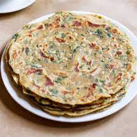

Methi Paratha

Ingredients:
- 1 cup Whole Wheat Flour + 1/2 cup for dusting
- 1/4 cup Besan (gram flour), optional
- 1 cup Fenugreek Leaves (finely chopped)
- 1/2 teaspoon Cumin Seeds
- 1½ teaspoons Green Chilli-Ginger Paste (1 green chilli + ½ inch ginger), optional
- 1 teaspoon Red Chilli Powder
- 2 tablespoons Curd (Plain Yogurt)
- 1 tablespoon Oil + for shallow frying
- Salt to taste
Steps:
- Pluck methi leaves (fenugreek leaves) from stems.
- Add plucked leaves in a bowl filled with water and keep them soaked for approx. 2-3 minutes to dissolve and separate any dirt/debri. Remove the leaves from the water and repeat the process 2-3 times or more (as needed) to clean methi leaves. Finely chop cleaned green methi leaves.
- Sift 1-cup whole wheat flour and gram flour in a wide mouth large bowl. Add cumin seeds, green chili-ginger paste, red chilli powder, curd, 1-tablespoon oil, finely chopped methi leaves and salt.
- Mix well.
- Add water as needed to knead a smooth and soft dough like chapati. Cover the dough with a cloth or a plate and keep it aside for 15-20 minutes.
- Knead the dough again. Divide it into 7-8 equal portions. Take each portion one by one, give it a round shape like ball and press it between your palms to give a pattie like shape.
- Take 1/2 cup dry wheat flour in a small plate. Take one pattie and coat it with dry wheat flour and place it over a rolling board.
- Roll it out into a circle having 4-5 inch diameter. Spread few drops of oil over one half portion using a spoon or brush.
- Fold it into a half circle. Again, spread few drops of oil over it and fold into a triangle.
- Coat the triangle shaped pattie with dry wheat flour and roll it out into a thin triangle having approx. 6-7 inch long sides.
- Heat the tava over medium flame. When it is medium hot, place rolled paratha over it.
- When tiny bubbles start to appear on the surface, flip the paratha. It will take around 30-40 seconds. Spread approx. ½ teaspoon oil evenly over its surface using a spatula.
- After 30-40 seconds, flip the paratha and spread ½ teaspoon oil evenly on the surface using a spatula.
- Press it gently with spatula and flip and cook until golden brown spots appear on both sides.
- Transfer it to a plate. Repeat steps 7 to 14 for remaining dough patties. Methi Ke Parathe is ready for serving. Serve it hot with plain curd or boondi raita and pickle.
Return to main page